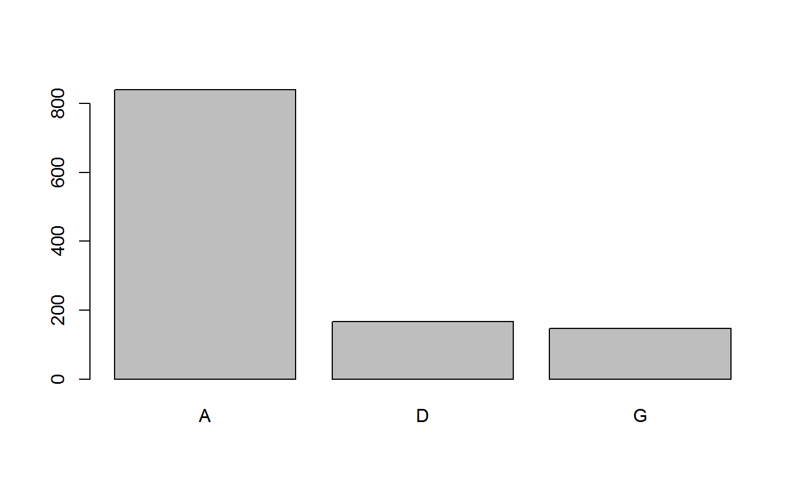
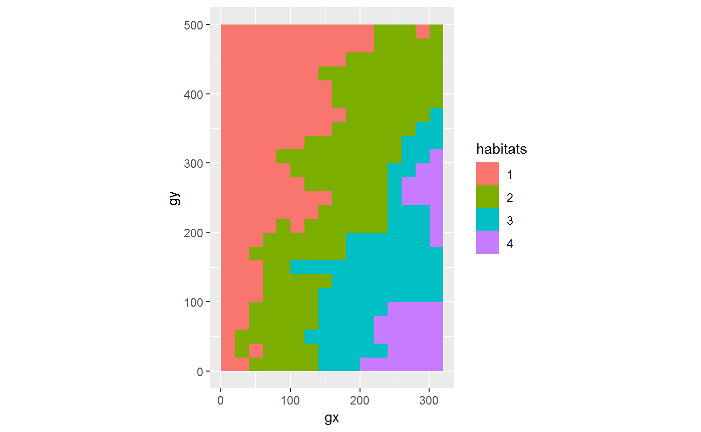
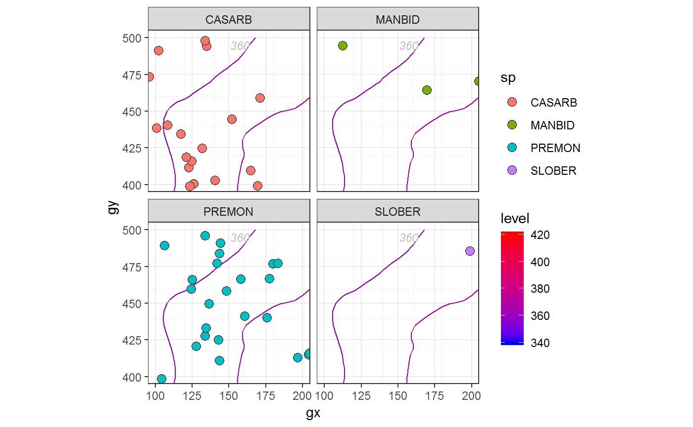

This article shows some of the key features of fgeo applied to an exploratory data analysis. For a deeper and general approach to exploratory data analysis, see this book section. A version adapted for ForestGEO is available here.
In every new R session you need to “open” fgeo with library().
library(fgeo.data)
library(fgeo)
#> -- Attaching packages --------------------------------------------- fgeo 0.0.0.9002 --
#> v fgeo.x 0.0.0.9000 v fgeo.map 0.0.0.9402
#> v fgeo.tool 0.0.0.9005
#> -- Conflicts ----------------------------------------------------- fgeo_conflicts() --
#> x fgeo.tool::filter() masks stats::filter()You may load your own data. Here we will use data from the fgeo.data package – which comes with fgeo.
We will use a dataset of stems censused in one hectare from the forest plot in Luquillo, Puerto Rico (https://forestgeo.si.edu/sites/north-america/luquillo).
stem <- luquillo_stem_random
str(stem)
#> Classes 'tbl_df', 'tbl' and 'data.frame': 7920 obs. of 19 variables:
#> $ treeID : int 104 119 180 180 180 180 602 631 647 1086 ...
#> $ stemID : int 143 158 222 223 224 225 736 775 793 1339 ...
#> $ tag : chr "10009" "100104" "100171" "100171" ...
#> $ StemTag : chr "10009" "100104" "100095" "100096" ...
#> $ sp : chr "DACEXC" "MYRSPL" "CASARB" "CASARB" ...
#> $ quadrat : chr "113" "1021" "921" "921" ...
#> $ gx : num 10.3 182.9 164.6 164.6 164.6 ...
#> $ gy : num 245 410 410 410 410 ...
#> $ MeasureID: int 143 158 222 223 224 225 736 775 793 1339 ...
#> $ CensusID : int 1 1 1 1 1 1 1 1 1 1 ...
#> $ dbh : num 115 16 17.2 11.7 80 19.4 24.1 100 146 165 ...
#> $ pom : chr "1.2" "1.3" "1.3" "1.3" ...
#> $ hom : num 1.2 1.3 1.3 1.3 1.3 1.3 1.3 1.3 1.3 1.3 ...
#> $ ExactDate: Date, format: "1991-06-11" "1993-07-28" ...
#> $ DFstatus : chr "alive" "alive" "alive" "alive" ...
#> $ codes : chr "MAIN;A" "MAIN;A" "SPROUT;A" "SPROUT;A" ...
#> $ countPOM : num 1 1 1 1 1 1 1 1 1 1 ...
#> $ status : chr "A" "A" "A" "A" ...
#> $ date : num 11484 12262 12263 12263 12263 ...For a description of the columns, see ?data_dictionary.
str(data_dictionary)
#> Classes 'tbl_df', 'tbl' and 'data.frame': 242 obs. of 3 variables:
#> $ table : chr "Census" "Census" "Census" "Census" ...
#> $ column : chr "CensusID" "PlotID" "PlotCensusNumber" "StartDate" ...
#> $ description: chr "Primary key, an integer automatically generated to uniquely identify a census." "Foreign Key to Site table." "Integer census number for an individual plot, 1=first census, 2=second census, etc. If there are more than one "| __truncated__ "Date on which the first measurement of the census was taken." ...
cols <- names(stem)
filter(data_dictionary, column %in% cols)
#> # A tibble: 20 x 3
#> table column description
#> <chr> <chr> <chr>
#> 1 Census CensusID Primary key, an integer automatically generat~
#> 2 CensusQuadrat CensusID Foreign Key to Census table.
#> 3 DataCollection CensusID Foreign Key to Census table.
#> 4 DBH CensusID Foreign Key to Census table.
#> 5 DBH ExactDa~ Date on which the measurement was taken.
#> 6 DBHAttributes CensusID Foreign Key to Census table.
#> 7 Measurement Measure~ Primary key, an integer automatically generat~
#> 8 Measurement CensusID Foreign Key to Census table.
#> 9 Measurement ExactDa~ "Date on which measurement has been done (for~
#> 10 MeasurementAtt~ Measure~ Foreign Key to Measurement table.
#> 11 MeasurementAtt~ CensusID Foreign Key to Census table.
#> 12 RemeasAttribs CensusID Foreign Key to Census table.
#> 13 Remeasurement CensusID Foreign Key to Census table.
#> 14 Remeasurement ExactDa~ "Date of remeasurement. (format is yyyy-mm-dd~
#> 15 SpeciesInvento~ CensusID Foreign Key to Census table.
#> 16 Stem StemTag The stem tag used in the field to identify the~
#> 17 TreeAttributes CensusID Foreign Key to Census table.
#> 18 ViewFullTable StemTag The stem tag used in the field to identify the~
#> 19 ViewFullTable CensusID Foreign Key to Census table.
#> 20 ViewFullTable ExactDa~ Date on which the measurement was taken (forma~This dataset comes with multiple censuses. We will pick only the latest one.
census5 <- fgeo.data::luquillo_tree5_random
census6 <- fgeo.data::luquillo_tree6_random
recruitment_ctfs(census5, census6)
#> Detected dbh ranges:
#> * `census1` = 10-955.
#> * `census2` = 10.2-992.
#> Using dbh `mindbh = 0` and above.
#> $N2
#> [1] 809
#>
#> $R
#> [1] 43
#>
#> $rate
#> [1] 0.01205766
#>
#> $lower
#> [1] 0.008953252
#>
#> $upper
#> [1] 0.01622177
#>
#> $time
#> [1] 4.529631
#>
#> $date1
#> [1] 18938.5
#>
#> $date2
#> [1] 20594.2With to_df() we convert the result of any demography function to a tibble – a convenient dataframe.
to_df(
recruitment_ctfs(census5, census6)
)
#> Detected dbh ranges:
#> * `census1` = 10-955.
#> * `census2` = 10.2-992.
#> Using dbh `mindbh = 0` and above.
#> # A tibble: 1 x 8
#> N2 R rate lower upper time date1 date2
#> <dbl> <dbl> <dbl> <dbl> <dbl> <dbl> <dbl> <dbl>
#> 1 809 43 0.0121 0.00895 0.0162 4.53 18939. 20594.We can aggregate results by any number of variables:
split1.to_df(recruitment_ctfs(census5, census6, split1 = census5$sp))
#> Detected dbh ranges:
#> * `census1` = 10-955.
#> * `census2` = 10.2-992.
#> Using dbh `mindbh = 0` and above.
#> # A tibble: 73 x 9
#> groups N2 R rate lower upper time date1 date2
#> <chr> <dbl> <dbl> <dbl> <dbl> <dbl> <dbl> <dbl> <dbl>
#> 1 ALCFLO 3 0 0 0 0.205 4.51 18980. 20626
#> 2 ALCLAT 0 0 NA NA NA NA 18945 NA
#> 3 ANDINE 2 0 0 0 0.273 4.50 18979 20623
#> 4 ARDGLA 2 0 0 0 0.269 4.56 18855 20522
#> 5 ARTALT 1 0 0 0 0.410 4.50 18904 20548
#> 6 BRUPOR 0 0 NA NA NA NA 18893 NA
#> 7 BUCTET 7 0 0 0 0.102 4.54 18902 20570.
#> 8 BYRSPI 10 0 0 0 0.0742 4.52 18983. 20650.
#> 9 CALCAL 1 1 Inf NA Inf NA NA 20626
#> 10 CASARB 70 5 0.0164 0.00712 0.0377 4.52 18984. 20637.
#> # ... with 63 more rowsinteraction() (but aggregating by more than one variable may be slow and confusing).sp_quadrat <- interaction(census5$sp, census5$quadrat)
by_many <- recruitment_ctfs(census5, census6, split1 = sp_quadrat)
#> Detected dbh ranges:
#> * `census1` = 10-955.
#> * `census2` = 10.2-992.
#> Using dbh `mindbh = 0` and above.
to_df(by_many)
#> # A tibble: 26,207 x 9
#> groups N2 R rate lower upper time date1 date2
#> <chr> <dbl> <dbl> <dbl> <dbl> <dbl> <dbl> <dbl> <dbl>
#> 1 PREMON.1001 1 0 0 0 0.399 4.62 18806 20495
#> 2 DACEXC.1002 1 0 0 0 0.399 4.63 18805 20495
#> 3 DACEXC.1005 1 0 0 0 0.404 4.56 18849 20515
#> 4 TRIPAL.1005 0 0 NA NA NA NA 18849 NA
#> 5 MANBID.1006 1 0 0 0 0.404 4.56 18849 20515
#> 6 EUGSTA.1007 1 0 0 0 0.410 4.50 18891 20534
#> 7 MANBID.1007 1 0 0 0 0.410 4.50 18892 20535
#> 8 MATDOM.1007 1 0 0 0 0.410 4.50 18891 20535
#> 9 MICPRA.1007 0 0 NA NA NA NA 18891 NA
#> 10 SLOBER.1007 0 0 NA NA NA NA 18890 NA
#> # ... with 26,197 more rowsTo separate the multiple groups we can use tidyr::separate().
tidyr::separate(to_df(by_many), groups, into = c("species", "quadrats"))
#> # A tibble: 26,207 x 10
#> species quadrats N2 R rate lower upper time date1 date2
#> <chr> <chr> <dbl> <dbl> <dbl> <dbl> <dbl> <dbl> <dbl> <dbl>
#> 1 PREMON 1001 1 0 0 0 0.399 4.62 18806 20495
#> 2 DACEXC 1002 1 0 0 0 0.399 4.63 18805 20495
#> 3 DACEXC 1005 1 0 0 0 0.404 4.56 18849 20515
#> 4 TRIPAL 1005 0 0 NA NA NA NA 18849 NA
#> 5 MANBID 1006 1 0 0 0 0.404 4.56 18849 20515
#> 6 EUGSTA 1007 1 0 0 0 0.410 4.50 18891 20534
#> 7 MANBID 1007 1 0 0 0 0.410 4.50 18892 20535
#> 8 MATDOM 1007 1 0 0 0 0.410 4.50 18891 20535
#> 9 MICPRA 1007 0 0 NA NA NA NA 18891 NA
#> 10 SLOBER 1007 0 0 NA NA NA NA 18890 NA
#> # ... with 26,197 more rowsThe same works for mortality and growth.
to_df(mortality_ctfs(census5, census6, split1 = sp_quadrat))
#> Detected dbh ranges:
#> * `census1` = 10-955.
#> * `census2` = 10.2-992.
#> Using dbh `mindbh = 0` and above.
#> # A tibble: 26,207 x 10
#> groups N D rate lower upper time date1 date2 dbhmean
#> <chr> <dbl> <dbl> <dbl> <dbl> <dbl> <dbl> <dbl> <dbl> <dbl>
#> 1 PREMON.1001 1 0 0 0 0.399 4.62 18806 20495 136
#> 2 DACEXC.1002 1 0 0 0 0.399 4.63 18805 20495 419
#> 3 DACEXC.1005 1 0 0 0 0.404 4.56 18849 20515 58
#> 4 TRIPAL.1005 1 1 Inf 0.0377 Inf 4.56 18849 20515 42.5
#> 5 MANBID.1006 1 0 0 0 0.404 4.56 18849 20515 30.6
#> 6 EUGSTA.1007 1 0 0 0 0.410 4.50 18891 20534 55
#> 7 MANBID.1007 1 0 0 0 0.410 4.50 18892 20535 15
#> 8 MATDOM.1007 1 0 0 0 0.410 4.50 18891 20535 240
#> 9 MICPRA.1007 1 1 Inf 0.0383 Inf 4.50 18891 20534 12.2
#> 10 SLOBER.1007 1 1 Inf 0.0382 Inf 4.50 18890 20534 101
#> # ... with 26,197 more rows
to_df(growth_ctfs(census5, census6, split1 = sp_quadrat))
#> Detected dbh ranges:
#> * `census1` = 10-955.
#> * `census2` = 10.2-992.
#> Using dbh `mindbh = 0` and above.
#> # A tibble: 26,207 x 8
#> groups rate N clim dbhmean time date1 date2
#> <chr> <dbl> <dbl> <dbl> <dbl> <dbl> <dbl> <dbl>
#> 1 PREMON.1001 -0.216 1 NA 136 4.62 18806 20495
#> 2 DACEXC.1002 0.864 1 NA 419 4.63 18805 20495
#> 3 DACEXC.1005 0.438 1 NA 58 4.56 18849 20515
#> 4 TRIPAL.1005 NA 0 NA NA NA NA NA
#> 5 MANBID.1006 -0.0219 1 NA 30.6 4.56 18849 20515
#> 6 EUGSTA.1007 0.222 1 NA 55 4.50 18891 20534
#> 7 MANBID.1007 -0.111 1 NA 15 4.50 18892 20535
#> 8 MATDOM.1007 0 1 NA 240 4.50 18891 20535
#> 9 MICPRA.1007 NA 0 NA NA NA NA NA
#> 10 SLOBER.1007 NA 0 NA NA NA NA NA
#> # ... with 26,197 more rowsTwo columns that are commonly useful in ForestGEO datasets are status and dbh (diameter at breast height). We will begin by better understanding what type of variables they are. For this, base R provides useful functions.
status is a categorical variable.
We can count the number of observations in each category with table(), then visualize the result with barplot().

dbh is a continuous numeric variable.
summary(stem6$dbh)
#> Min. 1st Qu. Median Mean 3rd Qu. Max. NA's
#> 10.2 27.2 98.5 110.3 155.0 992.0 480(Note the missing values (NAs).)
And we can visualize its distribution with hist().
Unfortunately hist() dropped missing values silently. But we can better understand how missing values of dbh relate to status by extracting only the columns dbh and status, and picking only the rows where dbh is missing.
dbh_status <- stem6[c("dbh", "status")]
missing <- filter(dbh_status, is.na(dbh))
unique(missing)
#> # A tibble: 2 x 2
#> dbh status
#> <dbl> <chr>
#> 1 NA G
#> 2 NA DAnother approach is to count missing values.
missing <- transform(stem6, na = ifelse(is.na(dbh), TRUE, FALSE))
table(missing$na, missing$status)
#>
#> A D G
#> FALSE 840 0 0
#> TRUE 0 166 314We learn that dbh is missing where a tree is dead (status = D) or gone (status = G). This makes sense and, depending on the type of analysis we want to do, we may want to keep or remove missing values.
Now we are ready to clean the data. For example, we can pick trees which status is “A” (alive). At ForestGEO, working with status is so common that fgeo provides a specialized function.
In stem6, the variable status records the status of each individual stem. How can we determine the status of a tree based on the status of each of its stems? That is the job of add_status_tree().
stem6 <- add_status_tree(stem6, status_a = "A", status_d = "D")
alive_trees <- filter(stem6, status_tree == "A")
# Note that alive trees may have some missing, gone or dead stems
some_cols <- c( "treeID", "status_tree", "stemID", "status")
example_tree <- 46
example_rows <- filter(alive_trees, treeID == example_tree)
select(example_rows, some_cols)
#> # A tibble: 0 x 4
#> # ... with 4 variables: treeID <int>, status_tree <chr>, stemID <int>,
#> # status <chr>dbh rangeAnother very common task when working with ForestGEO data is to pick stems of a particular dbh range.
Pick stems of 10 mm or more.
Calculate the total abundance of stems and trees.
# Drop missing values of `dbh`
non_missing <- filter(ten_plus, !is.na(dbh))
# Stem abundance
abundance(non_missing)
#> Warning: `treeid`: Duplicated values were detected. Do you need to pick
#> main stems?
#> # A tibble: 1 x 1
#> n
#> <int>
#> 1 840
# Tree abundance (picking main stems -- with highest `hom` and largest `dbh`)
main_stems <- pick_main_stem(non_missing)
abundance(main_stems)
#> # A tibble: 1 x 1
#> n
#> <int>
#> 1 786Calculate the abundance of trees by species.
by_sp <- group_by(main_stems, sp)
n_by_sp <- abundance(by_sp)
n_by_sp
#> # A tibble: 65 x 2
#> # Groups: sp [65]
#> sp n
#> <chr> <int>
#> 1 ALCFLO 3
#> 2 ANDINE 2
#> 3 ARDGLA 2
#> 4 ARTALT 1
#> 5 BUCTET 7
#> 6 BYRSPI 10
#> 7 CALCAL 1
#> 8 CASARB 66
#> 9 CASSYL 26
#> 10 CECSCH 29
#> # ... with 55 more rowsWhat are the three most abundant tree species?
top3 <- pick_top(n_by_sp, n, -3)
top3
#> # A tibble: 4 x 2
#> # Groups: sp [4]
#> sp n
#> <chr> <int>
#> 1 CASARB 66
#> 2 MANBID 45
#> 3 PREMON 234
#> 4 SLOBER 66Now we can pick the alive_trees of only the top3 species.
fgeo includes some functions specialized in mapping ForestGEO’s data.
Map the most abundant species.
# luquillo_elevation comes with fgeo
species_elevation <- sp_elev(picked_stems, luquillo_elevation)
autoplot(species_elevation)
Tweak to focus on the hectare available in the data.

tree <- fgeo.data::luquillo_tree5_random
elevation <- fgeo.data::luquillo_elevation
# Pick alive trees, of 10 mm or more
census <- filter(tree, status == "A", dbh >= 10)
# Pick sufficiently abundant species
pick <- filter(add_count(census, sp), n > 50)
species <- unique(pick$sp)
# Use your habitat data or create it from elevation data
habitat <- fgeo_habitat(elevation, gridsize = 20, n = 4)
# A list or matrices
tt_lst <- tt_test(census, species, habitat)
#> Using `plotdim = c(320, 500)`. To change this value see `?tt_test()`.
#> Using `gridsize = 20`. To change this value see `?tt_test()`.
tt_lst
#> [[1]]
#> N.Hab.1 Gr.Hab.1 Ls.Hab.1 Eq.Hab.1 Rep.Agg.Neut.1 Obs.Quantile.1
#> CASARB 35 1508 90 2 0 0.9425
#> N.Hab.2 Gr.Hab.2 Ls.Hab.2 Eq.Hab.2 Rep.Agg.Neut.2 Obs.Quantile.2
#> CASARB 24 433 1162 5 0 0.270625
#> N.Hab.3 Gr.Hab.3 Ls.Hab.3 Eq.Hab.3 Rep.Agg.Neut.3 Obs.Quantile.3
#> CASARB 11 440 1157 3 0 0.275
#> N.Hab.4 Gr.Hab.4 Ls.Hab.4 Eq.Hab.4 Rep.Agg.Neut.4 Obs.Quantile.4
#> CASARB 8 774 824 2 0 0.48375
#>
#> [[2]]
#> N.Hab.1 Gr.Hab.1 Ls.Hab.1 Eq.Hab.1 Rep.Agg.Neut.1 Obs.Quantile.1
#> PREMON 94 1511 87 2 0 0.944375
#> N.Hab.2 Gr.Hab.2 Ls.Hab.2 Eq.Hab.2 Rep.Agg.Neut.2 Obs.Quantile.2
#> PREMON 97 1403 196 1 0 0.876875
#> N.Hab.3 Gr.Hab.3 Ls.Hab.3 Eq.Hab.3 Rep.Agg.Neut.3 Obs.Quantile.3
#> PREMON 39 212 1386 2 0 0.1325
#> N.Hab.4 Gr.Hab.4 Ls.Hab.4 Eq.Hab.4 Rep.Agg.Neut.4 Obs.Quantile.4
#> PREMON 15 64 1535 1 0 0.04
#>
#> [[3]]
#> N.Hab.1 Gr.Hab.1 Ls.Hab.1 Eq.Hab.1 Rep.Agg.Neut.1 Obs.Quantile.1
#> SLOBER 21 413 1183 4 0 0.258125
#> N.Hab.2 Gr.Hab.2 Ls.Hab.2 Eq.Hab.2 Rep.Agg.Neut.2 Obs.Quantile.2
#> SLOBER 25 558 1040 2 0 0.34875
#> N.Hab.3 Gr.Hab.3 Ls.Hab.3 Eq.Hab.3 Rep.Agg.Neut.3 Obs.Quantile.3
#> SLOBER 21 1289 309 2 0 0.805625
#> N.Hab.4 Gr.Hab.4 Ls.Hab.4 Eq.Hab.4 Rep.Agg.Neut.4 Obs.Quantile.4
#> SLOBER 8 833 764 3 0 0.520625
# A simple summary to help you interpret the results
summary(tt_lst)
#> Species Habitat_1 Habitat_2 Habitat_3 Habitat_4
#> 1 CASARB neutral neutral neutral neutral
#> 2 PREMON neutral neutral neutral neutral
#> 3 SLOBER neutral neutral neutral neutral
# A combined matrix
Reduce(rbind, tt_lst)
#> N.Hab.1 Gr.Hab.1 Ls.Hab.1 Eq.Hab.1 Rep.Agg.Neut.1 Obs.Quantile.1
#> CASARB 35 1508 90 2 0 0.942500
#> PREMON 94 1511 87 2 0 0.944375
#> SLOBER 21 413 1183 4 0 0.258125
#> N.Hab.2 Gr.Hab.2 Ls.Hab.2 Eq.Hab.2 Rep.Agg.Neut.2 Obs.Quantile.2
#> CASARB 24 433 1162 5 0 0.270625
#> PREMON 97 1403 196 1 0 0.876875
#> SLOBER 25 558 1040 2 0 0.348750
#> N.Hab.3 Gr.Hab.3 Ls.Hab.3 Eq.Hab.3 Rep.Agg.Neut.3 Obs.Quantile.3
#> CASARB 11 440 1157 3 0 0.275000
#> PREMON 39 212 1386 2 0 0.132500
#> SLOBER 21 1289 309 2 0 0.805625
#> N.Hab.4 Gr.Hab.4 Ls.Hab.4 Eq.Hab.4 Rep.Agg.Neut.4 Obs.Quantile.4
#> CASARB 8 774 824 2 0 0.483750
#> PREMON 15 64 1535 1 0 0.040000
#> SLOBER 8 833 764 3 0 0.520625
# A dataframe
to_df(tt_lst)
#> # A tibble: 12 x 8
#> habitat sp N.Hab Gr.Hab Ls.Hab Eq.Hab Rep.Agg.Neut Obs.Quantile
#> * <chr> <chr> <dbl> <dbl> <dbl> <dbl> <dbl> <dbl>
#> 1 1 CASARB 35 1508 90 2 0 0.942
#> 2 2 CASARB 24 433 1162 5 0 0.271
#> 3 3 CASARB 11 440 1157 3 0 0.275
#> 4 4 CASARB 8 774 824 2 0 0.484
#> 5 1 PREMON 94 1511 87 2 0 0.944
#> 6 2 PREMON 97 1403 196 1 0 0.877
#> 7 3 PREMON 39 212 1386 2 0 0.132
#> 8 4 PREMON 15 64 1535 1 0 0.04
#> 9 1 SLOBER 21 413 1183 4 0 0.258
#> 10 2 SLOBER 25 558 1040 2 0 0.349
#> 11 3 SLOBER 21 1289 309 2 0 0.806
#> 12 4 SLOBER 8 833 764 3 0 0.521